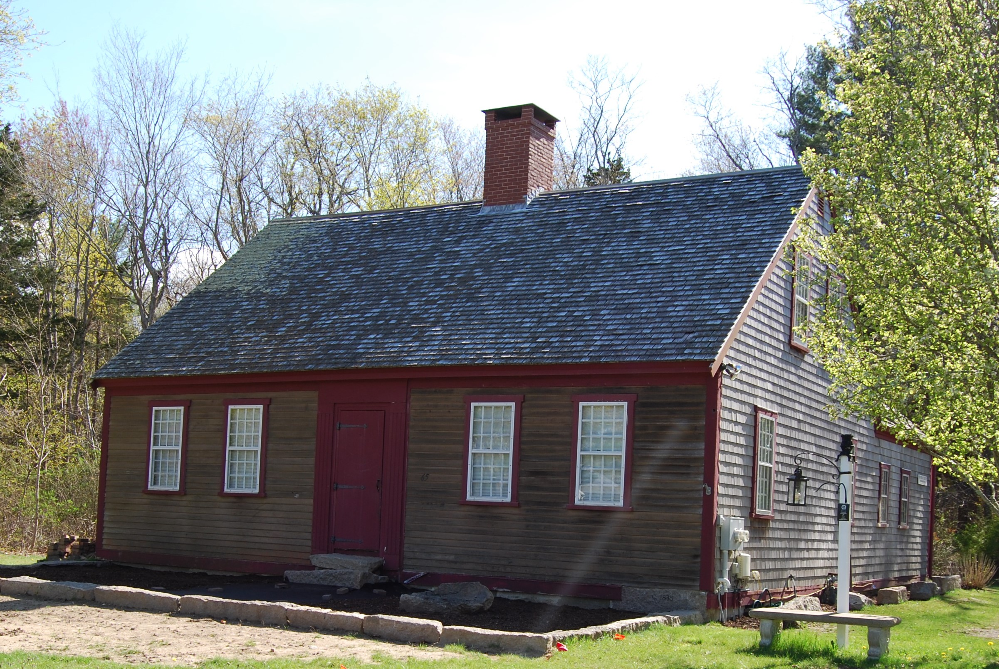

Marcia Thomas House
About
Marcia Thomas is remembered as Marshfield's first historian. Born in August of 1800, Thomas spent her life advocating for historic preservation. She was known to be passionate about research and even wrote a book titled Memorials of Marshfield. The Marshfield Historical Society honors her passion for history and preservation by maintaining their headquarters in her historic home.
Today, the Marcia Thomas House stands on Webster Street in Marshfield where it was moved from Ocean Street in 1997. Not only is the house the Society's headquarters, but it is also a museum. The museum contains the Society's archives and is open to the public. Here, visitors are welcome to explore the history of Marshfield that Thomas herself worked so hard to research and share with her community.
Museum Hours
The museum and archives are open the first Sunday of every month from 1PM - 4PM. They can also be accessed by private appointment.
The dates for 2020 are:
- January 5th
- February 2nd
- March 1st
- April 5th
- May 3rd
- June 7th
- July 5th
- August 2nd
- September 6th
- October 4th
- November 1st
- December 6th
Directions
Take either Exit 11 or Exit 12 off of Route 3
From Route 3 take Exit 11 (Route 14) east. Bear left at the fork onto Route 139. Continue through the intersection of Route 3A for 1.4 miles. Turn Left onto Webster Street. The Marcia Thomas House will be 1/4 mile on the left at 65 Webster Street.
From Route 3 take Exit 12 (Route 139) east for about 3 miles into the center of Marshfield. Turn right onto Webster Street. Proceed for about 2 miles. The Marcia Thomas House will be on the right at 65 Webster Street.